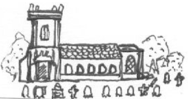
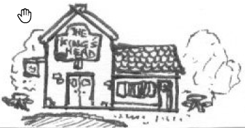

Un jeu de rôle à propos de dieux mineurs par Grant Howitt & Chris Taylor, 2017 - Traduit par Lucas Cimon @ chezsoi.org
Vous êtes un dieu mineur, un genius loci, dans un paisible village du sud de l’Angleterre des années 60.
Votre domaine définit la portée de votre pouvoir. Quand vous agissez dans votre domaine (sur des personnes, des concepts ou le bâtiment / le lieu lui-même), lancez 2 dés et gardez le résultat plus élevé.
Vous pouvez tuer et manger un autre genius loci pour gagner ses pouvoirs. Si vous le faites, vous gagnez accès à son domaine et supprimer toute une piste d’états.
Quand vous êtes confrontés à votre peur, lancez 2 dés et gardez le plus petit résultat à moins que vous ne fuyez ou capitulez.
 
(Lancez un D6 ou choisissez)
( MJ, jetez un dé dans cette table 2 ou 3 fois pour déterminer qui sont les autres dieux mineurs du village )
( Faites un jet lorsque vous les rencontrez pour la 1ère fois )
Vous adoptez une apparence humaine personnifiant la nature du lieu auquel vous êtes lié. Dans votre domaine vous êtes omnipotent, mais en-dehors vous êtes à peine plus puissant qu’un humain ; vous connaissez quelques tours mais vous restez bien un dieu très mineur.
( Ne faites un jet que si le MJ pense qu’un échec pourrait être intéressant )
Si vous le souhaitez, dessinez ensemble une carte de votre village, et donnez-lui un nom ! Placez la carte au centre de la table et complétez-la au fil de la partie.
NOM : _____________________________
ESPRIT DE : _________________________
APPARENCE : ________________________
AIME : _____________________________
PEUR : _____________________________
TROIS CHOSES INTÉRESSANTES À PROPOS DE MOI :
__________________________________
__________________________________
__________________________________
Si vous atteignez le niveau 3 dans 2 pistes d’état, vous disparaissez de l’histoire ou êtes corrompus par la MENACE.
Quand vous vous adonnez à quelque chose que vous aimez, retirez jusqu’à 3 états ( selon à quel point cela vous attire de ennuis, le plus étant le mieux )
(D6 ou choisissez)